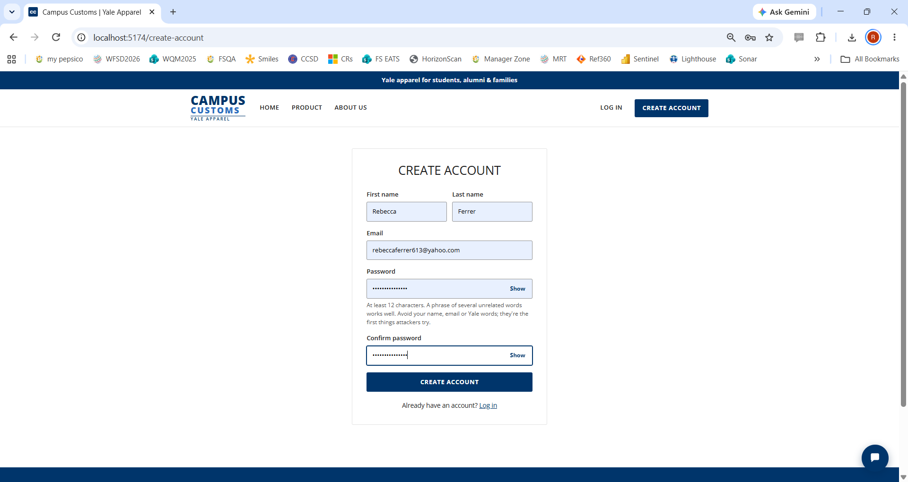
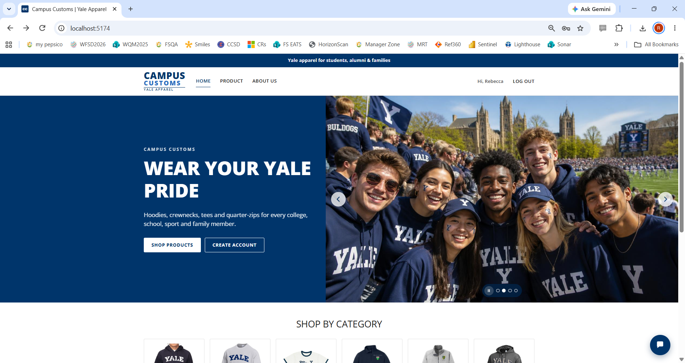
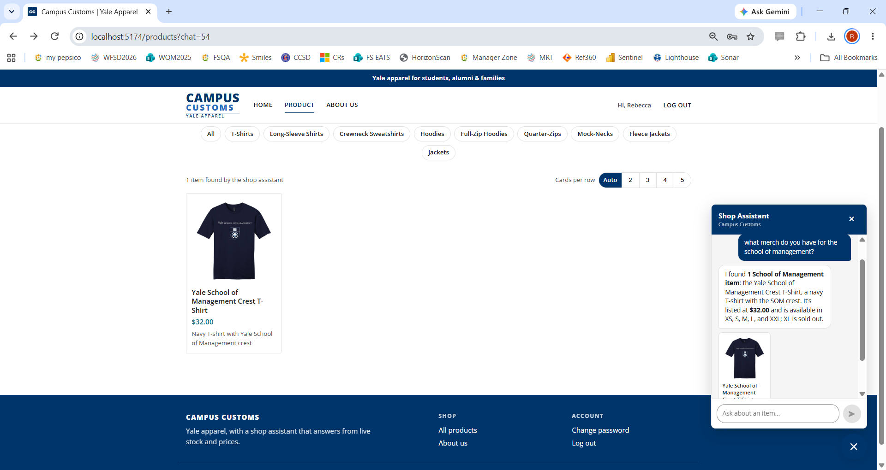
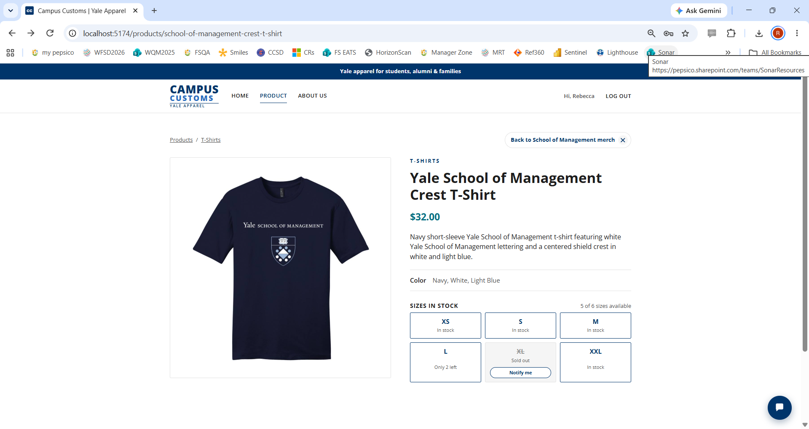
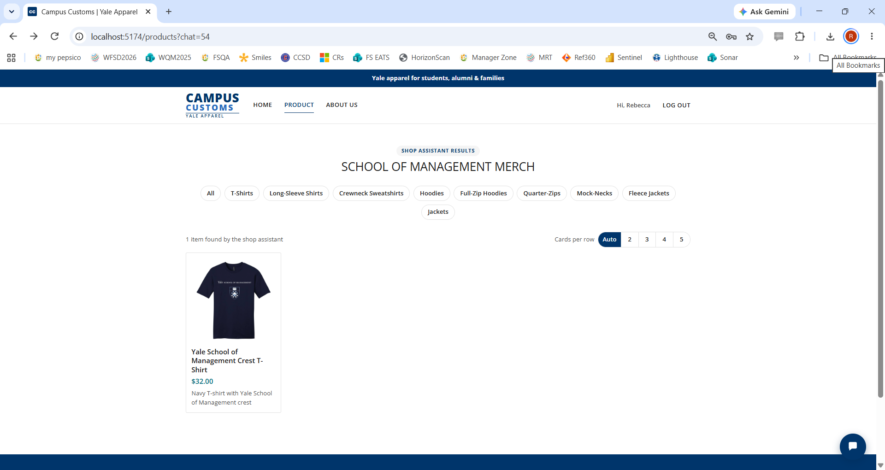

Summary
| # | Check | What it covers | Result |
|---|---|---|---|
| 1 | Create a new account | Problem 4: sign-up and login | ✓ Passed |
| 2 | Chat with the shop assistant: inventory levels and dynamic search result cards ("what merch do you have for the school of management?") | Problems 5–8: agent, tools, chat search that updates the page | ✓ Passed |
| 3 | Usability feature: a product opened from search results closes back to them | Problem 9: "Back to … ×" on the product page | ✓ Passed |
1. Create a new account
✓ PassedSteps
- Clicked Create Account in the top navigation.
- Entered first name Rebecca, last name Ferrer, an email address, and a password meeting the site's rules (at least 12 characters, not built from the name, email or Yale words), then confirmed it.
- Clicked Create Account.
Expected
- The account is created and the shopper is logged in right away.
- The header greets the shopper by first name and offers Log Out.
Result
Passed. The account was created and the site showed Hi, Rebecca and Log Out in the header (the home-page carousel was on the game-day photo).
Evidence




2. Chat: inventory levels and dynamic search result cards
✓ PassedSteps
- Logged in as Rebecca, opened the Shop Assistant chat (bottom right).
- Asked: "what merch do you have for the school of management?"
Expected
- Inventory: the assistant answers from the live database with the price and the sizes in stock, and says which sizes are sold out.
- Dynamic search cards: the Product page updates to "Shop Assistant results" with matching product cards (photo, name, price, short description), and the chat shows the card too.
Result
Passed. The assistant replied that it found 1 School of Management item, the Yale School of Management Crest T-Shirt, $32.00, available in XS, S, M, L and XXL, with XL sold out. The page changed to /products?chat=54 showing its card, and the chat showed the same card.
Cross-checked against campus_customs.db: price 3,200 cents ($32.00); stock XS 8, S 8, M 15, L 2, XL 0, XXL 12. It's the only School of Management product. Every number in the reply matches.
Evidence


3. Usability: a product opened from search results closes back to them
✓ PassedSteps
- On the search results page from check 2, clicked the Yale School of Management Crest T-Shirt card to open its full product page.
- Clicked Back to School of Management merch × at the top right.
Expected
- The product page names the gallery it came from in its close button, and closing it returns to those search results.
Result
Passed. The product page showed Back to School of Management merch ×, with live stock per size ("Only 2 left" in L, XL sold out with a Notify me button). Closing it returned to /products?chat=54, the "School of Management merch" results.
Evidence



